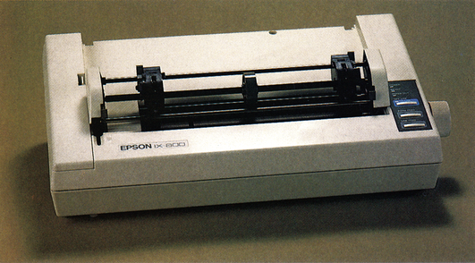
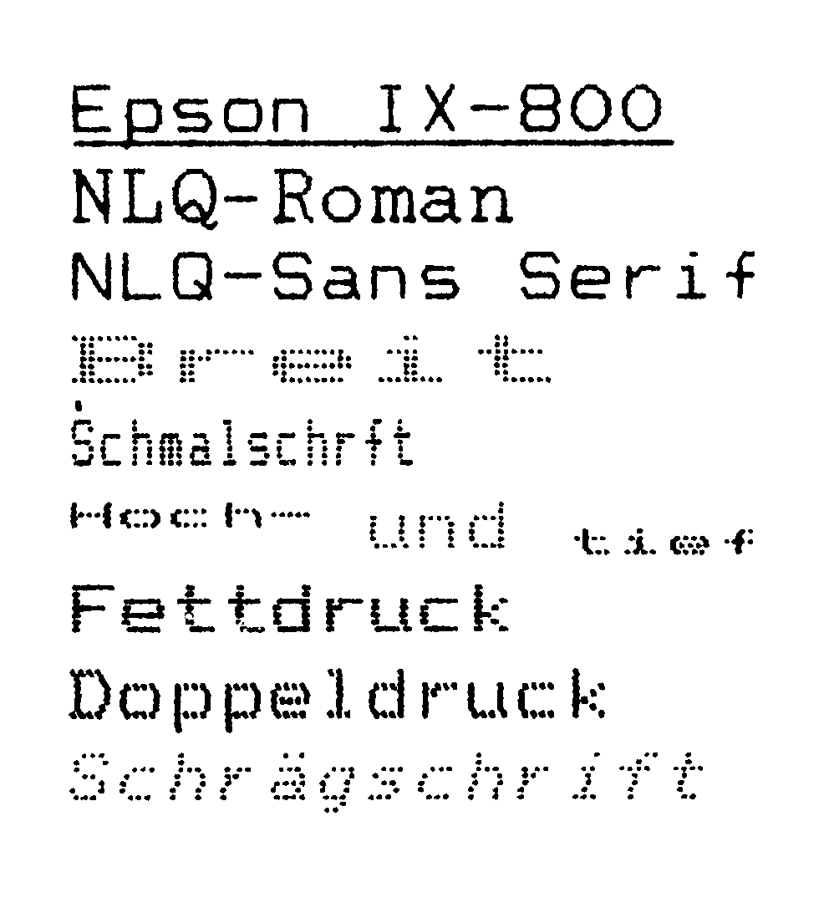
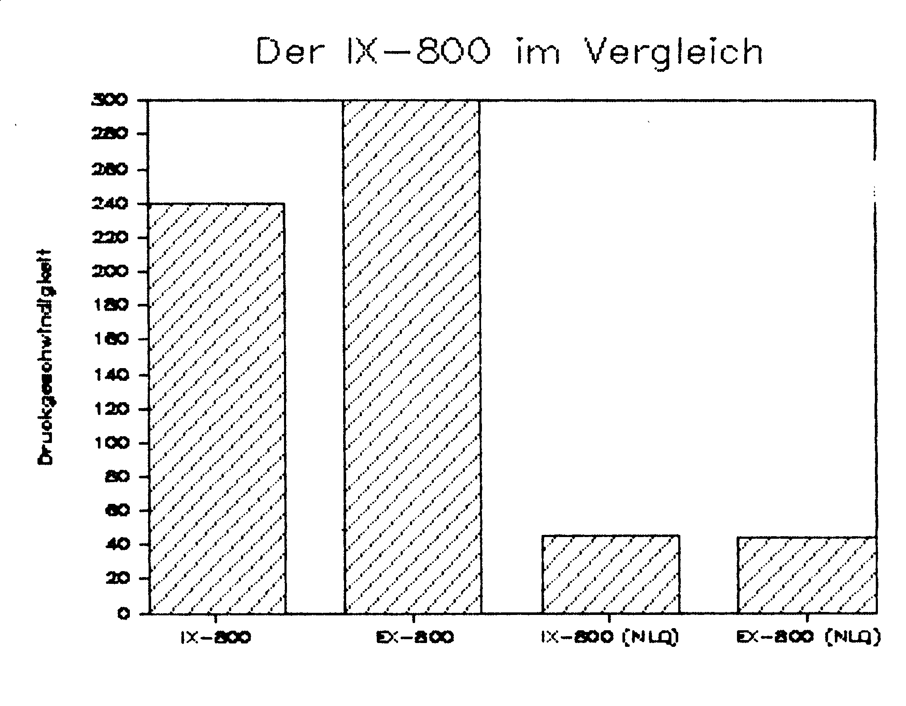

Der Leisedrucker
Tintenstrahldrucker sind leise, aber schafft es der Epson IX-800 aus einer hektischen Redaktion einen Ort der Ruhe zu machen?
Wenn Sie an die 64'er-Redaktion denken, welche Vorstellung haben Sie dann? Denken Sie an mit Computern, Monitoren und Druckern vollgestopfte Räume, zwischen denen fleißige Redakteure testen, telefonieren und schreiben? Tatsächlich produzieren die zahlreich in den Redaktionsräumen vorhandenen Telefone und Matrixdrucker einen Geräuschpegel, der mit zuverlässiger Regelmäßigkeit, immer gegen Redaktionsschluß, zu Recht die Bezeichnung »Lärm« verdient. Gegen die Telefone kann man bekanntlich nicht viel machen, denn die klingeln, wann Sie wollen, wohl aber gegen die Geräusche der Matrixdrucker. Hier ist die Domäne des Epson IX-800 (Bild 1) denn er ist ein Tintenstrahldrucker mit Düsen statt Nadeln.

Nadeln oder Düsen?
Stellt man den IX-800 vor sich hin und betrachtet man ihn von allen Seiten, so kann man zunächst keine Unterschiede zu einem Nadel-Matrixdrucker wie unserem Referenzmodell, dem EX-800, feststellen. Auf der Vorderseite befinden sich die bekannten drei Tasten zum Auslösen von Zeilen- und Seitenvorschub und zum Einstellen einiger Schriftarten, einschließlich der NLQ-Schrift. Auf der Rückseite findet man die Centronics- und sogar eine RS232C- Schnittstelle und die gut erreichbaren DIL-Schalter. Auch der Papierdrehknopf ist da, wo Rechtshänder ihn suchen: auf der rechten Seite. Wo also liegt der Unterschied? Hebt man die vordere Abdeckung, wird allerdings recht schnell klar, daß dieser Drucker etwas besonderes ist. Man findet weder Farbband noch Druckkopf, denn ein Farbband ist bei dieser Technik unnötig und der Druckkopf befindet sich bei ausgeschaltetem Drucker, in einer sicheren Warteposition am äußeren linken Anschlag. Doch nehmen wir den IX-800 in Betrieb und prüfen ihn in der Praxis. Dazu muß man zunächst, an Stelle eines Farbbandes, eine Tintenkartusche einsetzen. Man öffnet auf der linken Seite des Druckers eine Klappe (ohne Werkzeug), nimmt die Tintenpatrone und steckt sie einfach in das dafür vorgesehene Schubfach. Der ganze Vorgang ist noch einfacher als das Wechseln einer Farbbandkassette oder dem Wechseln der Tintenpatrone bei einem Füllfederhalter. Wenn man den IX-800 nun einschaltet, wird man zunächst mit dem ausgeklügelten Reinigungssystem des Druckers bekanntgemacht, das den Drucker mit einem Surren innerhalb von zwei Sekunden betriebsbereit macht. Wie aus dem Hause Epson nicht anders zu erwarten, beherrscht der IX-800 alle Befehle des erweiterten ESC/P-Standards. Man kann mit ihm demnach alles machen, was man mit einem Epson FX-85 oder EX-800 auch machen kann. Mehrere Schriftvariationen (siehe Bild 2,3), zwei NLQ-Schriften und selbstverständlich alle Grafikbefehle, bis hin zu einer Auflösung von 1920 Punkten pro Zeile sind möglich. Auch im Vergleich zu unserem Referenzdrucker hinterließ der IX-800 einen sehr guten Eindruck (Bild 4).


Bei allem, was der IX-800 druckt, bewahrt er die Ruhe. Zwar hört man nach wie vor das Vorschieben des Papiers und die Bewegungen des Druckkopfes, vom reinen Drucken ist aber so gut wie kein Geräusch mehr wahrzunehmen. In unserem vierwöchigen Test machte sich das Fehlen eines lärmenden Nadel-Matrixdruckers durchaus bemerkbar. Es wurden Artikelausdrucke ebenso wie die Korrespondenz gedruckt, auch bei der Wiedergabe verschiedener Hardcopies mußte der IX-800 nicht passen. Dabei fiel besonders positiv auf, daß es nicht notwendig war, ein spezielles Papier zu verwenden. Andererseits ist der IX-800, durch die Drucktechnik bedingt, nicht in der Lage, mehrere Durchschläge herzustellen. Dafür bot die Lebensdauer der Tintenpatrone keinen Anlaß zur Kritik, denn sie war bei Testende trotz intensiver Benutzung noch nicht aufgebraucht. Im Gegensatz zum normalen Farbband, das bekanntlich im Laufe der Zeit immer blasser wird, bleibt das Schriftbild vom ersten bis zum letzten Tintentropfen immer gleich intensiv.
Einziger Kritikpunkt während unseres Tests ist der, leider im Preis von 2298 Mark nicht enthaltende, Traktor, der zudem noch nach dem Prinzip des Zugtraktors konstruiert ist. Hier wäre es besser gewesen, den eingebauten Schubtraktor des EX-800 zu übernehmen.
Vollwertiger Ersatz
Der IX-800 hat in unserem vierwöchigen Praxistest bewiesen, daß er einen Nadel-Matrixdrucker, bis auf die Möglichkeit Durchschläge erstellen zu können, vollkommen ersetzen kann. Man kann den Ingenieuren bei Epson bescheinigen, daß sie diese Technik fest im Griff haben. Durch seine beinahe uneingeschränkte Gebrauchsfähigkeit, zusammen mit dem enorm reduzierten Geräuschpegel, ist der IX-800 ein Drucker mit Zukunft. Sowohl in der Mehrzahl der Büros, als auch in der Wohnung des ambitionierten Anwenders ist das Hämmern der Nadel-Matrixdrucker nun kein unumgängliches Übel mehr.
(aw)Auf einen Blick: technische Daten des Epson IX-800
| Name des Druckers: | Epson IX-800 | Empfohlener Preis: Traktor: |
2298 Mark 80 Mark |
|---|---|---|---|
| Abmessungen (B x T x H): | 485 x 302 x 103 mm | Farbpatrone-Preis: | sw: 31 Mark |
| Druckkopf: | 9 Düsen | Gewicht: | 6 Kilogramm |
| Zeichenmatrix (H x B): | 9 x 9 | NLQ-Matrix: | 18 x 18 |
| Papierarten: | Einzel, Endlos (mit Zusatztraktor) | Zeichensätze: | ASCII + IBM + Internationale |
| Papierformate: | Einzel, maximal 216 mm Endlos, maximal 216 mm |
Durchschläge: | — |
| Zeichen/Zeile: | Bis zu 137 | Selbsttest: | Ja |
| Hexdump: | Ja | Autom. Einzelblatt: | Nein (Option) |
| Pufferspeicher: | 2 KByte | Rückwärtstransp.: | Nein |
| Geschwindigkeit angegeben PICA Draft-Qualität: |
240 Zeichen/s | NLQ-Schrift: | 45 Zeichen/s |
| Geschwindigkeit Praxistest: | 178 Zeichen/s | NLQ-Schrift Praxistest: | 40 Zeichen/s |
| Ladbar. Zeichensatz: | Ja | Probetext: | 1 : 26 min |
| Grafikmodi: | 480, 960, 1920, 640, 720, 1152, 576 Punkte/Zeile | ||
| Schriftarten: | Pica, Elite, Schmal, Breit, Doppel, Fett, Hoch, Tief, Unterstreichen, Proportional, Italic, 2 NLQ-Schriften | ||
| Funktionstasten: | LF, FF, Online, mit Mehrfachfunktion | ||
| Ausstattung: | Tintenpatrone, Papierseparator, deutsches Handbuch | ||
| Besonderheiten: | zwei NLQ-Schriften, serielle und parallele Schnittstelle | ||
| Sonderzubehör: | Traktor, halbautomatischer Einzelblatteinzug | ||